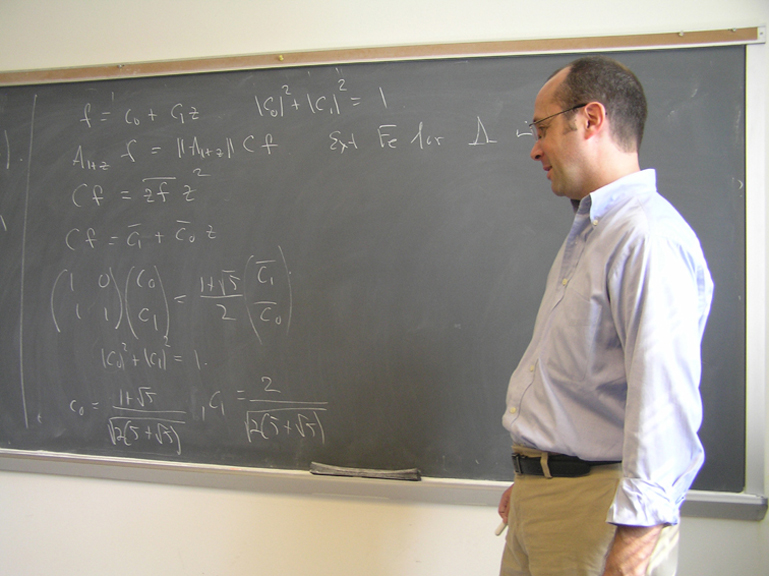
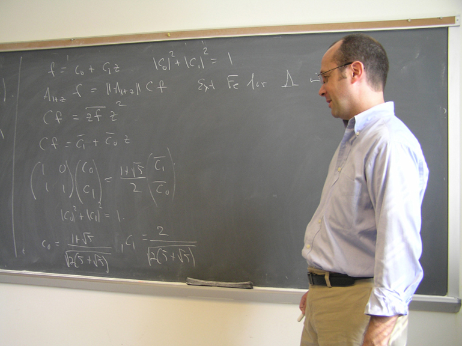

August 30, September 6, September 13, September 20
|
The WEP, the LLP, and some related conjectures according to Kirchberg
In his seminal paper, Kirchberg proved that Connes' Embedding Conjecture is actually equivalent to several other important conjectures, most notably what are called Kirchberg's Conjecture and the QWEP conjecture. In the ensuing years, these have been proven equivalent to a variety of open problems which intersect most fields in operator theory as well as noncommutative real algebraic geometry and quantum information theory. Much of Kirchberg's work is rooted in the seemingly unrelated Weak Expectation Property and Local Lifting Property. In this series of talks, we aim to better understand these properties, the tensorial duality Kirchberg discovered between them, and how this informs the connections between some of the aforementioned conjectures.
|
September 27
|
No seminar |
October 4
hopefully 5 pm
|
Separated subsets in the unit sphere of a Banach space
Let X be a Banach space. We study the circumstances under which there exists an uncountable set A of unit vectors such that |x-y|>1 for distinct x,y in A. We prove that such a set exists if X is quasi-reflexive and non-separable; if X is additionally super-reflexive then one can have |x-y| at least (1+ epsilon) for some epsilon>0 that depends only on X. If K is a non-metrisable compact, Hausdorff space, then the unit sphere of X=C(K) also contains such a subset; if moreover K is perfectly normal, then one can find such a set with cardinality equal to the density of X; this solves a problem left open by S. K. Mercourakis and G. Vassiliadis. This is joint work with T. Kochanek (Warsaw).
Isaac Goldbring (UC Irvine) will give the department colloquium on October 6.
VOTCAM will be held at the University of Richmond on October 8.
|
October 11
|
Bill Ross, University of Richmond
Ritt’s theorem
When can a finite Blaschke product be written as a non-trivial composition of two finite Blaschke products? This problem was solved in 1922 by Ritt through group theory. In this talk we explain the main points of Ritt’s argument via a method of Carl Cowen which allows us to “see” the associated monodromy group of a finite Blaschke product. |
October 18
|
No seminar |
October 25
|
No seminar |
November 1
|
No seminar |
November 8
|
Probably no seminar, since this is Election Day. But Simon Thomas (Rutgers) will give the department colloquium on November 10 and an algebra seminar on November 11.
|
November 15
|
James Arthur's Virginia Mathematics Lecture series will be given at 5 PM on November 14,15,16.
|
November 22
|
No seminar... last work hour before Thanksgiving break. |
November 29
|
Composition C*-algebras induced by linear-fractional non-automorphism self-maps of the unit disk
In this talk, we investigate the unital C*-algebras generated by composition operators induced by linear-fractional maps. Previous structure results for the non-automorphism case have required restrictions on the behavior of the inducing maps on the unit circle. We relax these restrictions and investigate the structures of C*-algebras generated by arbitrary finite collections of composition operators induced by linear-fractional, non-automorphism self-maps of the unit disk and either the unilateral shift or the ideal of compact operators. |
December 6
|
Ali Kavruk, Virginia Commonwealth University
How are Christandl's Problem and Connes' Embedding Problem connected?
In Quantum Information Theory Peres-Horodecki-Woronowicz's PPT (positive partial transpose) criterion is an effective method to identify separable states if the local dimensions are low ((2,2), (2,3) or (3,2)). M. Christandl then asks if bi-PPT cones can identify separable states on a quantum system with arbitrary local dimensions. In this talk we first study the general theory of symmetrization in the operator system category. We go through the stability properties of these functors under quotients, duality, tensor products, etc. We then express Christandl's Problem in this setting. We will see that this problem is connected with Connes' Embedding Problem and give various open problems which are implied by these two questions. This will be an introductory talk and accessible to grad students. |

 
